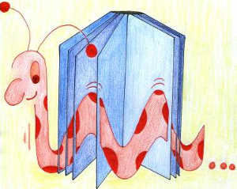

Puzzle 10: Bücherwurm

Illustration: Rachel Berchtold
In einem Büchergestell stehen 6 Bände einer Enzyklopädie,
geordnet von Band 1 bis zu Band 6. Jeder Band enthält 100 Seiten. (1 Seite = 1 Blatt)
Ein Bücherwurm frisst sich nun von Seite 1 des ersten Bandes bis Seite 100 des letzten Bandes durch.
Er benötigt pro Seite eine Minute und pro Buchdeckel 3 Minuten.
Welche Zeit (in Minuten) benötigt der Bücherwurm für seine 'Arbeit'?
©1997 - 2026 www.mathematik.ch |🔍